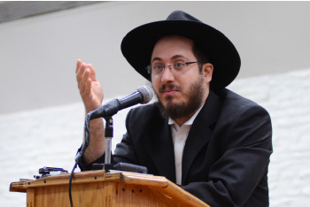

Why Didn’t King Chizkiya Merit to Be Moshiach?
The primary way that we show our thanks and appreciation to Hashem for the miracles of Chanuka is by lighting the Menorah for 8 days. Every day we light a different amount of candles. It is well known that there is an argument between Beis Shammai and Beis Hillel as to the amount of candles that we should light each night. Beis Shammai says that we start with eight and progressively decrease until we kindle only one light on the final night. Beis Hillel says that we start with one and increase each night until on the eight night we kindle eight lights.

This week, Klal Yisroel celebrates the Yom Tov of Chanuka, thanking Hashem for the miracles that he showed us 2278 years ago.
Showing our thanks and appreciation to Hashem helps bring Moshiach. The Gemara (Sanhedrin 94a) says that Hashem said that Chizkiya was worthy of being Moshiach. However, Midas HaDin complained and said that being that Chizkiya did not praise Hashem when miracles were shown to him, he should not be Moshiach. The Rebbe (VaYeishev 5752) learns from this Gemara that in our days we must spread the miracles that Hashem has performed for us.
[There is a fascinating explanation of the Sh’la HaKadosh on the above-mentioned Gemara. He asks: how could the Gemara claim that Chizkiya didn’t praise Hashem for the miracles that happened to him, when there are explicit verses that say that he sang Hallel to Hashem? The Sh’la HaKadosh answers: True, he said Hallel and sang praises to Hashem, but that was only after the miracles happened. If you want to have Geula – and be Moshiach – you must show your anticipation and thanks before the Geula happens!]
The primary way that we show our thanks and appreciation to Hashem for the miracles of Chanuka is by lighting the Menorah for 8 days. Every day we light a different amount of candles. It is well known that there is an argument between Beis Shammai and Beis Hillel as to the amount of candles that we should light each night. Beis Shammai says that we start with eight and progressively decrease until we kindle only one light on the final night. Beis Hillel says that we start with one and increase each night until on the eight night we kindle eight lights.
During the time of exile, we follow the ruling of Beis Hillel. Our sages (Midrash Shmuel to Avos 5:19 and others) say that in the times of Moshiach, the Halacha will be like the house of Shammai. This does not contradict the eternity of Halacha, because the reason we follow Hillel was because his opinion was held by the majority. In the times of Moshiach – when everyone will become wiser and appreciate the wisdom of Shammai – the opinion of the House of Shammai will be the majority.
The Rebbe (Toras Menachem 5752 Vol. 1 page 185) teaches us that in the latter era of Yemos HaMoshiach, when the true will of Hashem will be revealed in the world, the Halacha will be like both! This fits with what Chazal tell us that the word משה is an acronym of משה הלל שמאי, that eventually we will see that both opinions were given to Moshe Rabbeinu at Har Sinai!
Let us finish with words of the Rebbe (Chanuka 5751):
Applying this to a timely theme: As we stand in the days of Chanukah – though a multifaceted Holiday – – we ought to emphasize primarily its connection with Redemption.
This festival was instituted because of the miracle with the cruse of oil involved with the kindling of the menorah in the Beis HaMikdash [Temple]. Afterwards, the Chashmonaim dedicated the Temple (“They cleared Your Sanctuary and purified Your Holy Temple”). Mention of the Temple is an immediate reminder of the Redemption, and serves to enhance our anticipation for his coming every day, the building and dedication of the third Beis HaMikdash and the lighting of the Menorah by Aaron the High Priest, which will occur with the true and complete Redemption by our righteous Moshiach.
…Similarly with respect to the Torah reading of the Shabbos of Chanukah. During the Torah reading, as soon as a Jew hears and comprehends the word “Mikeitz – the End,” he exclaims, “Aha! This is an allusion to the end of exile, referred to as the ‘end of days – Keitz HaYamim’ [spelled with a final Mem which connotes the end of exile], as well as “the end of days – Keitz HaYamin” [spelled as it is in the end of the book of Daniel, with a final nun which connotes] the deadline for the Redemption!”
And afterwards, when one reads or hears the Haftora which states, “I beheld the Menorah, entirely of gold,” one senses immediately a reference to the future Redemption!
Likewise, upon reading about the N’siim and the Nasi of the tribe of Reuven in particular, a Jew is reminded forthwith of the true and complete Redemption, at which time all the N’siim will be present, and the status of the Jewish People as the “first born child” of the whole world will be manifest.
Rabbi Avtzon is the Rosh Yeshiva of Yeshivas Lubavitch Cincinnati and a well sought after speaker and lecturer. Recordings of his in-depth shiurim on Inyanei Geula u’Moshiach can be accessed at http://www.ylcrecording.com.
Rabbi Sholom Ber Avtzon. "Why Didn’t King Chizkiya Merit to Be Moshiach?." Beis Moshiach, no. 904 (November 26, 2013).